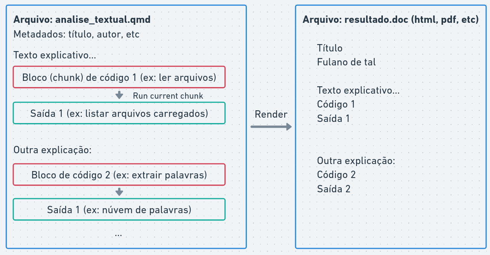
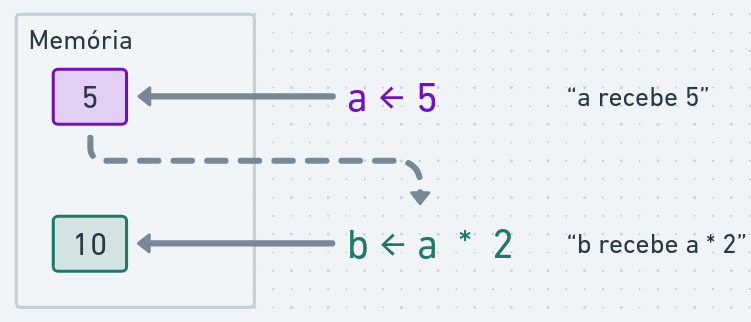
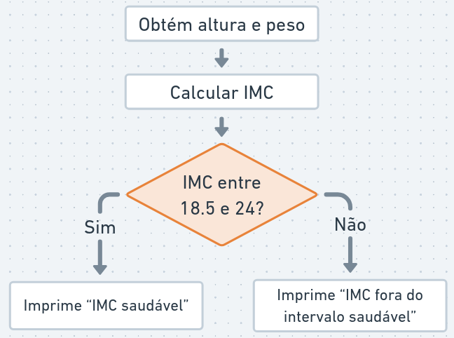
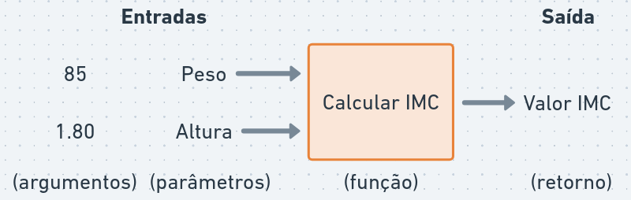

flowchart LR
A[Entrada] --> B{{Script R}}
B --> C[Saída]
1 Linguagem R
Nesta aula:
Como utilizar a linguagem R
Comandos básicos
Utilizando bibliotecas
Funções para processamento de texto
1.1 A Linguagem R
- R é uma linguagem de programação e ambiente de software para computação estatística e gráficos
- Criada por Ross Ihaka e Robert Gentleman em 1993
- Muito utilizada em ciência de dados, estatística e análise de texto
- Possui uma grande comunidade de usuários e desenvolvedores, com muitas bibliotecas para análise de textos
1.1.1 Programando scripts em R:
Script R: sequência de comandos R que podem ser executados para realizar uma tarefa específica (ex: análise de sentimentos)
Em PLN:
flowchart LR
A[Entrada: arquivo texto 1, texto 2, ...] --> B{{analise_sentimentos.R}}
B --> C[Saída: texto 1: positivo, texto 2: negativo, ...]
analise_sentimentos.R é um arquivo contendo instruções para:
- Ler arquivos de texto
- Processar textos (tokenização, remoção de stopwords, stemming)
- Analisar sentimentos (encontrar palavras positivas e negativas)
- Gerar saída (relatório, gráfico, tabela)
O intepretador R é um programa que executa os comandos do script e produz a saída desejada.
1.1.2 Ambientes para programar em R
O interpretador R está disponível para download em https://cran-r.c3sl.ufpr.br/
## (utilizado apenas para exibir páginas no Google Colab)
if (!requireNamespace("htmltools", quietly = TRUE)) {
install.packages("htmltools")
}
htmltools::tags$iframe(src = "https://cran-r.c3sl.ufpr.br/", width = "100%", height = "315")- no Windows é necessário também instalar RTools, disponível em https://cran.r-project.org/bin/windows/Rtools/, que inclui ferramentas para auxiliar a instalação de pacotes do R.
Podemos escrever comandos R em diversos ambientes:
1.1.2.1 Rstudio
- Ambiente de programação integrado (IDE) instalada localmente (Windows, Mac, Linux).
- Possui diversas funcionalidades para facilitar a escrita e execução de código R, como editor de scripts, console interativo, visualização de gráficos e gerenciamento de pacotes.
Disponível em: https://posit.co/downloads/
Uma alternativa é a IDE Positron, disponível em: https://positron.posit.co/download.html.
1.1.2.2 Google Colab
- Ambiente online para programação em Python, mas também suporta R com algumas configurações adicionais (selecione “R” como linguagem de programação para criar um notebook R).
- Permite compartilhar notebooks interativos com código R e resultados.
Disponível em: https://colab.research.google.com/
Uma alternativa é a posit.cloud, disponível em: https://posit.cloud.
1.1.2.3 Console R
- Interface de linha de comando para executar comandos R diretamente no terminal.
- Um comando é executado por vez (digite o comando e aperte Enter), e o resultado é exibido imediatamente.
- Menos amigável para scripts longos, mas útil para testes rápidos e aprendizado.
Acessando o console R:
- No terminal, digite
Rpara iniciar o console R eq()para sair. - No Rstudio, o console R está disponível na parte inferior da interface.
- No Google Colab, clique em “Terminal” e digite “R” para iniciar o console R.
1.1.2.4 Scripts R
- Arquivo de texto com extensão
.Rque contém uma sequência de comandos R. - Permite organizar e reutilizar código, facilitando a execução de tarefas complexas.
Escrevendo um script R:
- No Rstudio, crie um novo script: File > New File > R Script. Clique em “Source” para executar o script inteiro ou selecione linhas específicas e clique em “Run” para executar apenas essas linhas.
1.1.2.5 Notebooks R
- Notebooks são documentos que combinam texto explicativo, código R e resultados (gráficos, tabelas) em um formato interativo.
- Permitem criar relatórios dinâmicos e interativos, facilitando a comunicação de resultados
Para criar e executar notebooks R, você pode usar o Rstudio ou o Google Colab:
- No Rstudio, crie um novo notebook: File > New File > Quarto Document.
- No Google Colab, clique em “File” > “New Notebook” e selecione “R” como linguagem de programação.

Notebooks possuem dois tipos de células:
- células de texto para escrever explicações e comentários
- células de código para escrever e executar código R (botão “play” executa cada célula individualmente)
1.1.3 Comandos básicos
- Executar cálculos
- Operadores relacionais e lógicos
- Variáveis
- Listas e vetores
- Funções
- Strings (cadeias de caracteres)
1.1.3.1 Operadores aritméticos
R pode ser utilizado para cálculos básicos, por exemplo:
print(4 + 3)[1] 7print(*)é uma função que exibe o resultado na tela.
print(5 * 2 + 3)[1] 13print((6 - 1) / 2) [1] 2.5Qualquer código após # é considerado um comentário e não é executado:
8 / 3 # Isto é um comentário, não será executado[1] 2.6666671.1.3.2 Operadores relacionais e lógicos
Operadores relacionais são utilizados para comparar valores.
Igualdade:
print(5 == 5)[1] TRUEDiferença:
print(1 != 2)[1] TRUEMaior que:
print(4 > 3)[1] TRUEMenor que:
print(2 < 5)[1] TRUEMaior ou igual a:
print(3 >= 3)[1] TRUE- Expressões lógicas: retornam verdadeiro (
TRUE) ou falso (FALSE)
Conjunção “e”:
print(4 > 3 && 8 > 2)[1] TRUE&&é o operador lógico “e” (conjunção) que retornaTRUEse ambas as expressões forem verdadeiras, caso contrário retornaFALSE:TRUE && TRUEretornaTRUETRUE && FALSEretornaFALSEFALSE && TRUEretornaFALSEFALSE && FALSEretornaFALSE
Disjunção “ou”:
print(4 > 3 || 2 > 8)[1] TRUE||é o operador lógico “ou” (disjunção) que retornaTRUEse pelo menos uma das expressões for verdadeira, caso contrário retornaFALSE.:TRUE || TRUEretornaTRUETRUE || FALSEretornaTRUEFALSE || TRUEretornaTRUEFALSE || FALSEretornaFALSE
Negação “não”
print(!(5 > 3))[1] FALSE!é o operador lógico “não” (negação) que inverte o valor lógico de uma expressão. Se a expressão forTRUE, retornaFALSE, e se forFALSE, retornaTRUE.!(TRUE)retornaFALSE!(FALSE)retornaTRUE
(TRUE && FALSE) || TRUE[1] TRUE1.1.3.3 Variáveis
Variáveis guardam valores computados em memória:
a <- 5
print(a)[1] 5Utilizamos o operador <- para atribuir valores a variáveis.
O valor armazenado pode ser utilizado em outras expressões:
print(a * 2 + 3)[1] 13Ou podemos criar novas variáveis a partir de outras:
b <- a * 2
print(b)[1] 10
O valor armazenado na variável pode ser alterado:
a <- 10
print(a)[1] 10Variáveis podem armazenar diferentes tipos:
p <- 1 == 1
q <- 4 < 3
print(p || q)[1] TRUEO nome da variável deve começar com uma letra e pode conter letras, números (exceto no começo), underscores (_) e ponto:
isto_é_uma_variável <- 10
aluno_aprovado_1 <- isto_é_uma_variável == 10
print(isto_é_uma_variável)[1] 10print(aluno_aprovado_1)[1] TRUEExemplo de cálculo do índice de massa corporal (IMC):
peso <- 70 # peso em kg
altura <- 1.75 # altura em metros
imc <- peso / (altura * altura)
imc_saudavel <- imc >= 18.5 && imc <= 24
print(imc)[1] 22.85714print(imc_saudavel)[1] TRUE1.1.3.4 Condicionais
O comando if é utilizado para executar um bloco de código apenas se uma condição for verdadeira:
x <- 10
if (x > 5) {
print("x é maior que 5")
}[1] "x é maior que 5"O comando else pode ser utilizado para executar um bloco de código alternativo caso a condição seja falsa:

peso <- 70 # peso em kg
altura <- 1.75 # altura em metros
imc <- peso / (altura * altura)
print(imc)[1] 22.85714imc_saudavel <- imc >= 18.5 && imc <= 24
if (imc_saudavel) {
print("IMC saudável")
} else {
print("IMC fora do intervalo saudável")
}[1] "IMC saudável"1.1.3.5 Funções
Uma função é um trecho de código “auto-contido” que possui um nome, geralmente empregado para uso de operações comuns.
Por exemplo, print é a função que usamos para exibir resultados na tela.
R possui várias funções para estatística e análise de dados. Alguns exemplos são:
Valor absoluto:
print(abs(-5))[1] 5Raiz quadrada:
raiz <- sqrt(16)
print(raiz)[1] 4Logaritmo:
log(100, base = 10)[1] 2100 é o primeiro argumento
10 é o segundo argumento (nomeado como “base”, por padrão é
exp(1), i.e, logaritmo natural)Para obter ajuda em funções execute
help(log)ou?log
Também é possível definir nossas próprias funções:
calcular_imc <- function(peso, altura) {
altura_quadrado <- altura * altura
return(peso / altura_quadrado)
}
imc <- calcular_imc(85, 1.80)
print(imc)[1] 26.23457
Observe a sintaxe para declarar uma função:
nome_da_funcao <- function(argumentos) {
# corpo da função
}A expressão dreturn(...) é utilizada para indicar o valor que a função deve retornar. Se não for especificada, a função retornará o resultado da última expressão avaliada.
Note que qualquer variável criada dentro da função é local a ela, ou seja, não pode ser acessada fora da função:
print(altura_quadrado)Error in print(altura_quadrado): objeto 'altura_quadrado' não encontradoApós definir uma função, podemos utilizá-la em qualquer parte do código:
teste_imc <- function(peso, altura) {
imc <- calcular_imc(peso, altura)
imc_saudavel <- imc >= 18.5 && imc <= 24
return(imc_saudavel)
}
print(calcular_imc(80, 1.75) < calcular_imc(70, 1.65))[1] FALSEEm certos casos, utilizamos o resultado de uma função como argumento de outra função:
converter_para_celsius <- function(fahrenheit) {
celsius <- (fahrenheit - 32) * 5 / 9
return(celsius)
}
esta_congelando <- function(celsius) {
congelando <- celsius <= 0
return(congelando)
}
temperatura_inverno <- 25 # Graus Fahrenheit (aprox. -3.8 °C)
resultado <- esta_congelando(converter_para_celsius(temperatura_inverno))
print(resultado)[1] TRUEEm R, podemos utilizar o operador “pipe” (|>) para encadear funções de forma mais legível:
temperatura_inverno <- 25 # Graus Fahrenheit (aprox. -3.8 °C)
resultado <- temperatura_inverno |>
converter_para_celsius() |>
esta_congelando()
print(resultado)[1] TRUE- No exemplo, a expressão
temperatura_invernoé passada como primeiro argumento para a funçãoconverter_para_celsius(), e o resultado dessa função é então passado como primeiro argumento para a funçãoesta_congelando().
O operador pipe (|>) torna o código mais legível, permitindo que as funções sejam encadeadas de maneira clara e fluida.
1.1.3.6 Vetores
Vetores são conjuntos de vários elementos (átomos) do mesmo tipo:
vetor_num <- c(1, 2, 3, 4, 5, 6, 7)
vetor_num[1] 1 2 3 4 5 6 7Operações podem ser propagadas para todos os elementos do vetor:
vetor_num <- c(1, 2, 3)
vetor_num <- vetor_num + 5
print(vetor_num)[1] 6 7 8Sequências são criadas com a sintaxe:
vetor_seq <- 1:10
print(vetor_seq) [1] 1 2 3 4 5 6 7 8 9 10Algumas funções operam sobre vetores:
print(sum(1:100))[1] 5050print(mean(1:100))[1] 50.5print(sd(1:100))[1] 29.01149Para acessar um elemento específico do vetor, utilizamos colchetes:
vetor_pares <- c(2, 4, 6, 8, 10)
print(vetor_pares[3])[1] 6Podemos acessar múltiplos elementos do vetor:
print(vetor_pares[c(1, 4)])[1] 2 8Também podemos filtrar elementos do vetor com expressões lógicas:
pares_maior_5 <- vetor_pares > 5
elementos_maior_5 <- vetor_pares[pares_maior_5]
print(vetor_pares)[1] 2 4 6 8 10print(pares_maior_5)[1] FALSE FALSE TRUE TRUE TRUEprint(elementos_maior_5)[1] 6 8 10print(vetor_pares[vetor_pares > 5])[1] 6 8 10O operador %in% é utilizado para verificar se os elementos de um vetor estão presentes em outro vetor:
vetor_a <- c(1, 2, 3, 4, 5)
vetor_b <- c(3, 4, 5, 6, 7)
print(vetor_a %in% vetor_b)[1] FALSE FALSE TRUE TRUE TRUE1.1.3.7 Data frames
R possui vários tipos de dados, os principais são:
- Numéricos: números inteiros ou decimais (ex:
5,3.14) - Lógicos:
TRUEouFALSE - Strings: texto entre aspas (ex:
"Olá, mundo!")
Data frames são tabelas de dados, onde cada coluna é um vetor de um tipo específico e cada linha representa uma observação:
df <- data.frame(
nome = c("João", "Maria", "Pedro"),
idade = c(30, 25, 28),
turma = c("A", "B", "A")
)
print(df) nome idade turma
1 João 30 A
2 Maria 25 B
3 Pedro 28 AData frames são amplamente utilizados para análise de dados, permitindo manipular e analisar conjuntos de dados tabulares.
São essencialmente listas de vetores, onde cada vetor representa uma coluna da tabela. Cada coluna pode conter um tipo diferente de dados (numéricos, lógicos, strings), mas todas as colunas devem ter o mesmo número de elementos (linhas).
Acessando colunas:
df <- data.frame(
nome = c("João", "Maria", "Pedro"),
idade = c(30, 25, 28),
turma = c("A", "B", "A")
)
print(df$idade)[1] 30 25 28Acessando linhas:
print(df[1, ]) nome idade turma
1 João 30 APara selecionar alunos com mais de 25 anos:
alunos_mais_velhos <- df[df$idade > 25, ]
print(alunos_mais_velhos) nome idade turma
1 João 30 A
3 Pedro 28 A1.1.3.8 Bibliotecas e pacotes
Bibliotecas são conjuntos de funções escritas por terceiros (ex: tidyverse).
Para instalar uma biblioteca utilizamos install.packages(...).
if (!"tidyverse" %in% installed.packages()) {
install.packages("tidyverse")
}Vários pesquisadores contribuem com bibliotecas no repositório oficial do R https://cran-r.c3sl.ufpr.br/.
Para acessar as funções de uma biblioteca, é necessário carregá-la com library(...):
── Attaching core tidyverse packages ──────────────────────── tidyverse 2.0.0 ──
✔ dplyr 1.1.4 ✔ readr 2.1.5
✔ forcats 1.0.0 ✔ stringr 1.5.1
✔ ggplot2 3.5.2 ✔ tibble 3.3.0
✔ lubridate 1.9.4 ✔ tidyr 1.3.1
✔ purrr 1.0.4
── Conflicts ────────────────────────────────────────── tidyverse_conflicts() ──
✖ dplyr::filter() masks stats::filter()
✖ dplyr::lag() masks stats::lag()
ℹ Use the conflicted package (<http://conflicted.r-lib.org/>) to force all conflicts to become errorsA tidyverse possui diversas funções para manipulação de data frames (equivalente a tibble), como filter, select, mutate, entre outras, que facilitam a análise de dados tabulares:
alunos <- tibble(
nome = c("João", "Maria", "Pedro"),
idade = c(30, 25, 28),
nota_final = c(8.5, 9.0, 6.5),
turma = c("A", "B", "A")
)
alunos_filtrados <- alunos |>
filter(idade > 25) |> # filtrar os alunos com mais de 25 anos
mutate(aprovado = nota_final >= 7) |> # nova coluna "aprovado" com base na nota final
select(nome, idade, aprovado) # selecionar apenas as colunas nome e idade
print(alunos_filtrados)# A tibble: 2 × 3
nome idade aprovado
<chr> <dbl> <lgl>
1 João 30 TRUE
2 Pedro 28 FALSE Calculando a média de idade dos alunos aprovados:
media_idade_aprovados <- alunos |>
filter(nota_final >= 7) |>
summarise(media_idade = mean(idade))
print(media_idade_aprovados)# A tibble: 1 × 1
media_idade
<dbl>
1 27.5Em resumo, vimos exemplos de funções:
filter(): filtra linhas com base em condições lógicasmutate(): cria novas colunas ou modifica colunas existentesselect(): seleciona colunas específicassummarise(): calcula estatísticas resumidas, como média, soma, etc
Existem várias funções para manipulação de data frames incluídas na tidiverse. Um resumo visual dessas funções está disponível em https://nyu-cdsc.github.io/learningr/assets/data-transformation.pdf.
1.1.3.9 Strings (cadeias de caracteres)
String é o tipo de dados para textos. Aspas simples ou duplas indicam que o conteúdo deve ser interpretado como texto:
texto <- "Olá, mundo!"
print(texto)[1] "Olá, mundo!"A biblioteca stringr (incluída como parte da tidyverse) possui diversas funções para manipulação de strings (todas começam com str_):
a <- "olá"
b <- 'mundo'
a_b_concatenados <- str_c(a, b, sep = " ")
print(a_b_concatenados)[1] "olá mundo"- “concatenar” significa unir duas ou mais strings em uma única string. A função
str_cdo pacotestringré usada para concatenar strings, e o argumentosepespecifica o separador entre as strings concatenadas (neste caso, um espaço).
num_palavras <- str_length("quantos caracteres tem esta frase?")
print(num_palavras)[1] 34str_lengthé uma função do pacotestringrque retorna o número de caracteres em uma string, incluindo espaços e pontuação.
contem_texto <- str_detect("este texto contém palavras", "texto")
print(contem_texto)[1] TRUEstr_detecté uma função do pacotestringrque verifica se uma string contém um padrão específico. RetornaTRUEse o padrão for encontrado eFALSEcaso contrário.
Todas as funções do pacote stringr são projetadas para trabalhar com vetores de strings, o que significa que você pode aplicar essas funções a um vetor de textos e obter resultados para cada elemento do vetor.
discursos <- c(
"este texto contém palavras",
"este outro texto não tem a palavra-chave",
"a palavra-chave está presente aqui"
)
contem_texto <- str_detect(discursos, "palavra-chave")
print(contem_texto)[1] FALSE TRUE TRUE1.2 Exemplo: Análise de Sentimentos com R
library(tidyverse)Criando um vetor de textos:
textos <- c(
"Eu amo este produto, é incrível!",
"Este serviço é péssimo, estou muito insatisfeito.",
"O filme foi ótimo, adorei a história e os personagens.",
"A comida estava horrível, não recomendo este restaurante.",
"O atendimento foi excelente, muito atenciosos e rápidos.",
"Não volto mais a este lugar."
)
print(textos)[1] "Eu amo este produto, é incrível!"
[2] "Este serviço é péssimo, estou muito insatisfeito."
[3] "O filme foi ótimo, adorei a história e os personagens."
[4] "A comida estava horrível, não recomendo este restaurante."
[5] "O atendimento foi excelente, muito atenciosos e rápidos."
[6] "Não volto mais a este lugar." Criando um data frame com os textos:
df_textos <- tibble(texto = textos)
print(df_textos)# A tibble: 6 × 1
texto
<chr>
1 Eu amo este produto, é incrível!
2 Este serviço é péssimo, estou muito insatisfeito.
3 O filme foi ótimo, adorei a história e os personagens.
4 A comida estava horrível, não recomendo este restaurante.
5 O atendimento foi excelente, muito atenciosos e rápidos.
6 Não volto mais a este lugar. Criando um vetor de palavras positivas e negativas:
palavras_positivas <- c("amo", "incrível", "ótimo",
"adorei", "excelente", "atenciosos", "rápidos")
palavras_negativas <- c("péssimo", "insatisfeito", "horrível",
"não recomendo", "ruim", "lento")
print(palavras_positivas)[1] "amo" "incrível" "ótimo" "adorei" "excelente"
[6] "atenciosos" "rápidos" print(palavras_negativas)[1] "péssimo" "insatisfeito" "horrível" "não recomendo"
[5] "ruim" "lento" Função para analisar o sentimento de um vetor de palavras:
analisar_sentimento <- function(palavras) {
palavras_positivas_encontradas <- sum(palavras %in% palavras_positivas)
palavras_negativas_encontradas <- sum(palavras %in% palavras_negativas)
if (palavras_positivas_encontradas > palavras_negativas_encontradas) {
return("Positivo")
} else if (palavras_negativas_encontradas > palavras_positivas_encontradas) {
return("Negativo")
} else {
return("Neutro")
}
}
print(analisar_sentimento(c("este", "produto", "é", "incrível")))[1] "Positivo"Aplicando a função de análise de sentimento a cada texto:
df_analise <- df_textos |>
mutate(texto_min = str_to_lower(texto)) |> # converter para minúsculas
mutate(palavras = str_extract_all(texto_min, boundary("word"))) |> # dividir o texto em palavras
mutate(sentimento = map_chr(palavras, analisar_sentimento)) |> # map_chr aplica a função a cada elemento da coluna
select(texto, sentimento) # selecionar apenas as colunas de interesse
print(df_analise)# A tibble: 6 × 2
texto sentimento
<chr> <chr>
1 Eu amo este produto, é incrível! Positivo
2 Este serviço é péssimo, estou muito insatisfeito. Negativo
3 O filme foi ótimo, adorei a história e os personagens. Positivo
4 A comida estava horrível, não recomendo este restaurante. Negativo
5 O atendimento foi excelente, muito atenciosos e rápidos. Positivo
6 Não volto mais a este lugar. Neutro df_contagem <- df_analise |>
group_by(sentimento) |> # agrupar por sentimento
summarise(contagem = n()) # contar o número de textos em cada categoria de sentimento
print(df_contagem)# A tibble: 3 × 2
sentimento contagem
<chr> <int>
1 Negativo 2
2 Neutro 1
3 Positivo 31.3 Para saber mais
As três primeiras partes do livro R for Data Science (Wickham 2023) é uma ótima introdução à linguagem R e manipulação de dados com a biblioteca tidyverse.
1.4 Atividade prática
- Crie um vetor de textos contendo pelo menos 5 frases de discursos políticos.
- Crie um data frame com esses textos.
- Defina 3 vetores com palavras representando temas políticos (ex: economia, saúde, educação).
- Crie uma função que analise se um texto contém mais palavras relacionadas a um tema e retorne o tema predominante.
- Aplique a função de análise de temas a cada texto e crie uma nova coluna no data frame indicando o tema predominante em cada texto.